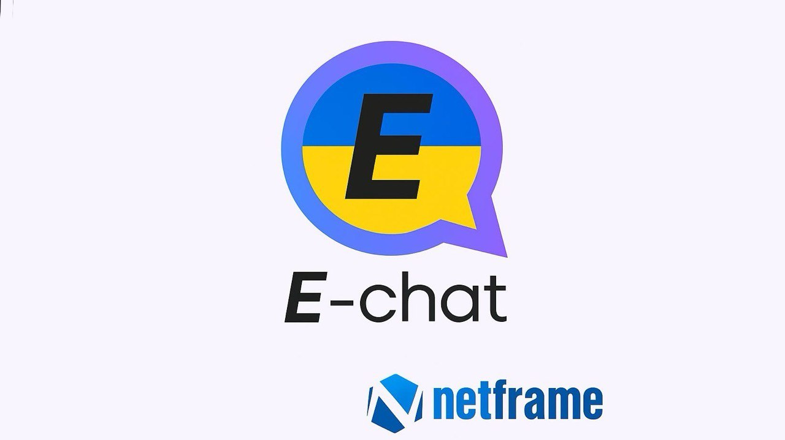
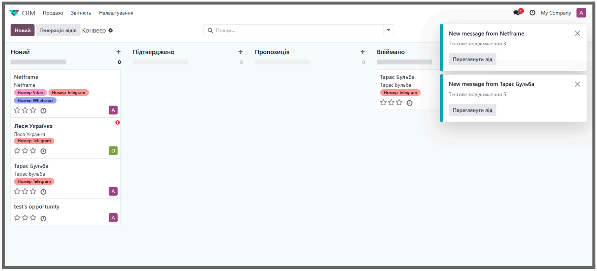
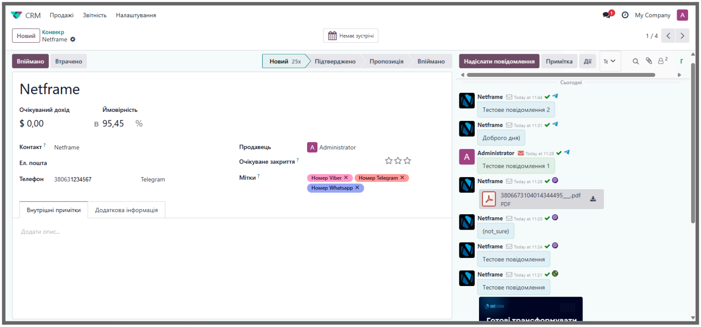
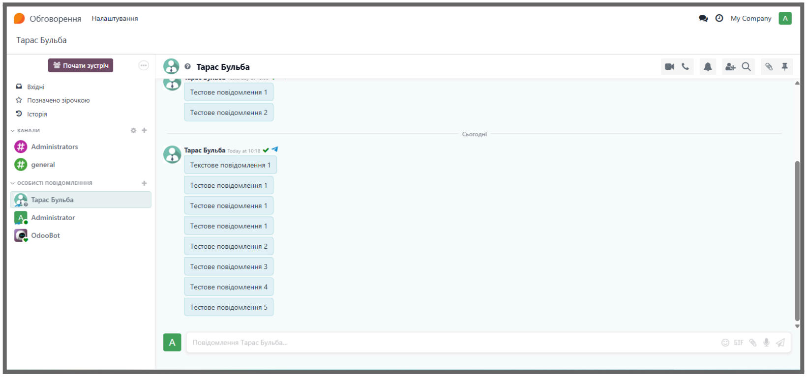
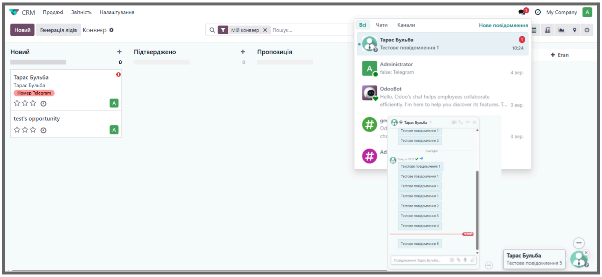
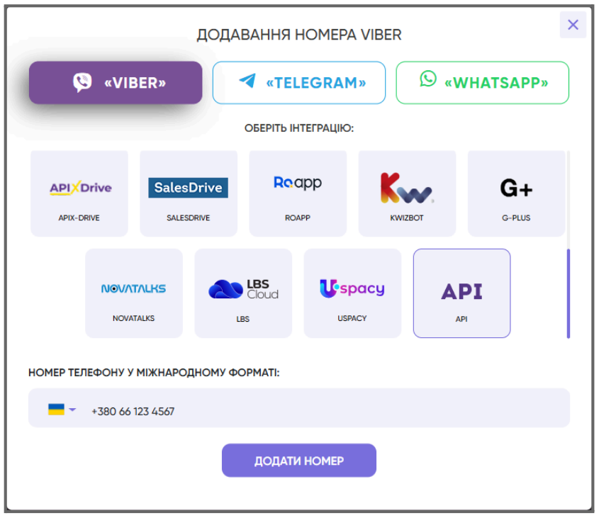
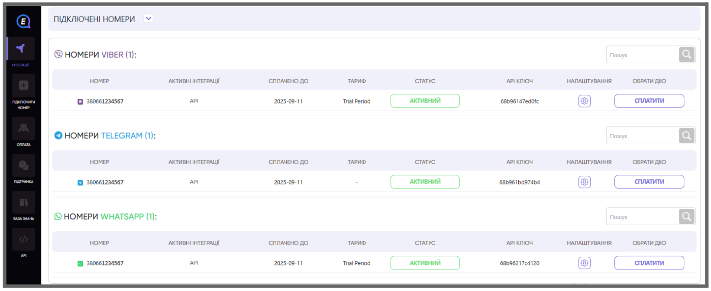
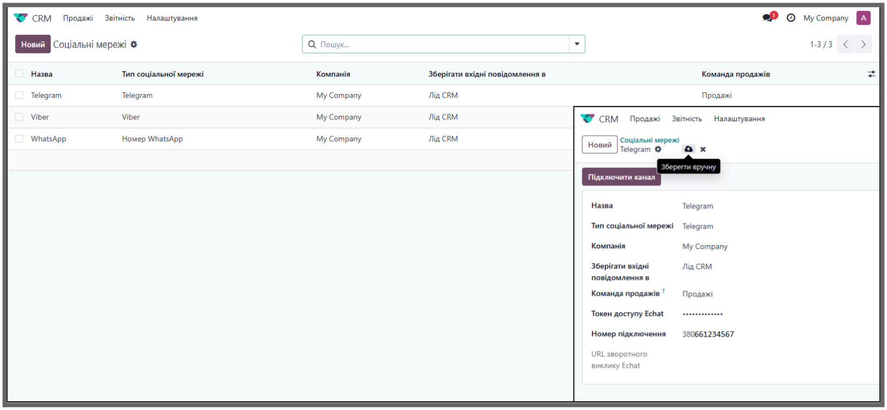
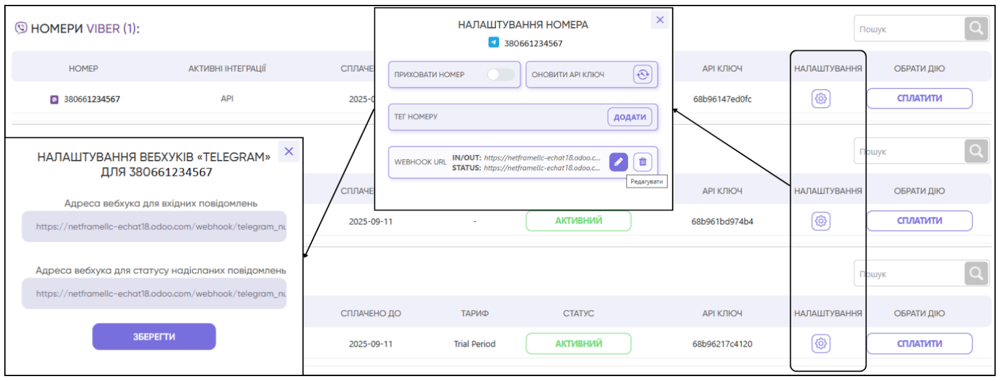

E-Chat is a platform for integrating Viber, Telegram, and WhatsApp into Odoo. It provides centralized management of all connected channels and quick setup via API tokens and webhooks.






Go to CRM → Configuration → Social Media and create a connection for each messenger. Fill in the following fields:


Send a message from a connected messenger and check its delivery in Odoo → CRM Lead or Discuss. The module ensures centralized communication, automated lead creation, and efficient distribution.